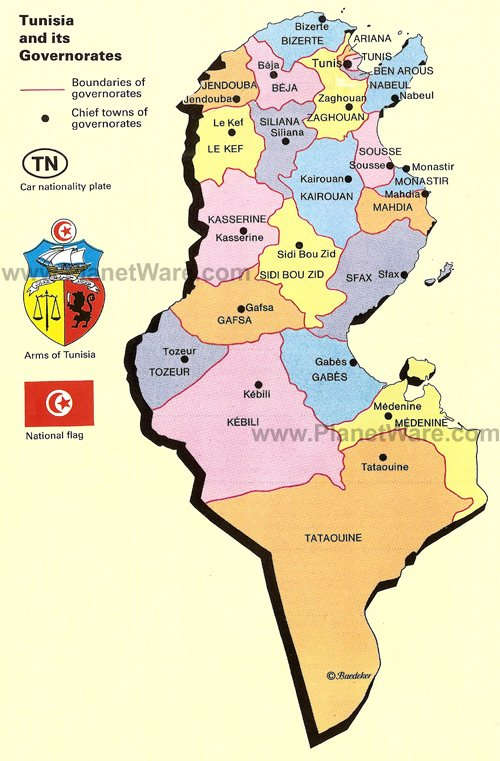
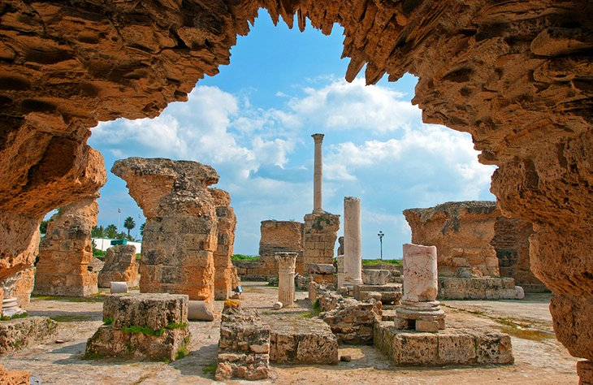
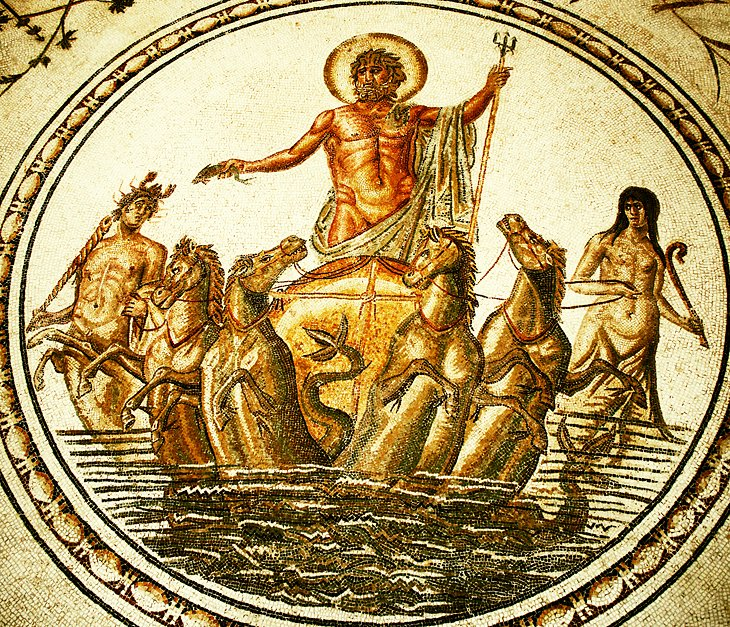
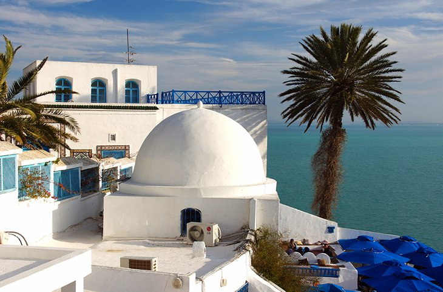
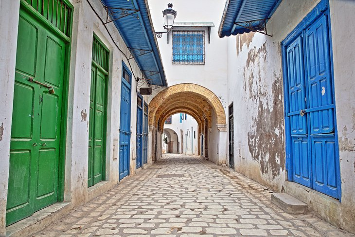
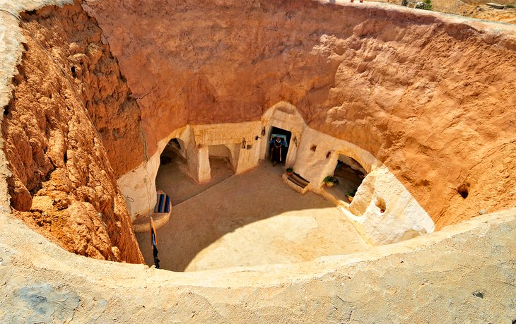
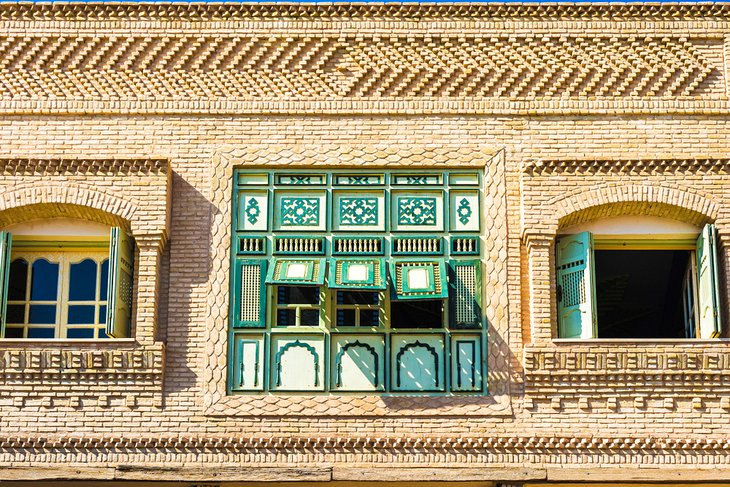
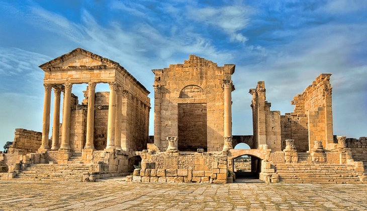

historie of tunisiathe site of present day Tunis is one of the two oldest cities in the entire Mediterranean area. The first to settle here were the Numidians, who named their town Tunes. Afterwards, the Phoenicians founded Carthage near here in 814 BCE. The rise of Tunis began with the final destruction of Carthage by the Arabs in 698 CE. The Lake of Tunis provided a natural harbor for the Muslim fleet. Under the rule of Ibrahim II of the Aghlabid dynasty in 894 CE, the capital was transferred from Kairouan to Tunis, and the town began to develop into one of the leading spiritual and intellectual centers of the Islamic world. In the 16th century, Tunis' prosperity attracted the attention of pirates, who captured and looted the town in 1534. In the following year, the Emperor Charles V drove out the pirates and Tunis became Spanish, though the administration remained in the hands of the ruling Hafsid dynasty. In 1569, the Ottoman Turks over-powered the Spaniards, but Don John of Austria in turn defeated the Turks. In 1574, however, the Ottoman army won back the town, and it became the seat of an Ottoman governor. In 1871, the Turkish Bey of Tunis, Hussein, declared himself independent of Constantinople, but the city (and country) fell under the colonial rule of France, which made Tunis an administrative center of their North African protectorate. French rule finally ended on March 20, 1956 and in the following year, Tunis became capital of the Tunisian Republic. |
 |
|---|---|
1. Explore the Ruins of CarthageThe remnants of ancient Carthage – fabled wealthy seafaring city of the Phoenicians – lie scattered across the Bay of Tunis. The evocative tumbled columns and piles of marble rubble are bordered by a panorama of the Mediterranean Sea, which was so fundamental to the city's prosperity. Completely destroyed in the third Punic War in 146 BCE, the surviving ruins pale in comparison to some of North Africa's other ancient sites, but this doesn't mean you shouldn't visit. With their seafront setting, the ruins have an unbeatable, lost-in-time air. The separate sites are strung out along the bay area. From the central city, take the Tunis Light Railway line direct to the various Carthage stops on the line. Some of the sites are close enough to be walked between if it's not too hot. Don't skip the views across the entire area from the top of Byrsa Hill. |
 |
2. The National Bardo MuseumOne of the world's three most renowned mosaic art collections (the other two are both in Turkey) resides in this opulent palace museum. Inside, room after room exhibits gloriously intricate and still vibrantly fresh examples of mosaic art that have been unearthed from sites across the entirety of Tunisia. The Sousse Room, Odysseus Room, and Dougga Room are the highlights, with their famed, incredibly well-preserved mosaic floorings from the Hellenistic and Roman era, but the entire collection is well worth an afternoon of browsing. The ground floor of the building holds some interesting non-mosaic exhibits with displays of the neo-Punic, Christian, and Islamic eras. |
 |
3. Day Trip to Sidi Bou SaidThe gorgeous Andalusian-style seaside neighborhood of Sidi Bou Said owes its fame to three young painters. While living here in 1914, Paul Klee, August Macke, and Louis Moilliet captured the beauty of its whitewashed buildings and blue doors on canvas. Sidi Bou Said has been something of a bohemian artists' quarter ever since and is a favored weekend hangout spot for Tunis locals. There are no major tourist attractions as such (that's part of its charm), but you can't fail to be beguiled by the perfect white-and-blue streets, cliffside cafés, and picture-postcard shoreline. This is a place made for idle strolling, trinket shopping, and sitting back with a coffee simply soaking up the scenery. |
 |
4. Get Lost amid the MedinaChock-a-block full of crumbling buildings found by weaving your way through a procession of ever-skinnier alleyways, the medina (old town) district is Tunis' historic heart and is brimming with sightseeing potential. The main entrance gate, marking the end of the new city and beginning of the old is known as Bab el Bahr (Sea Gate). Built in 1848, it was known as Porte de France during the colonial period. The old town walls of the Hafsid period may have long ago disappeared, but once inside, mosques, madrassas (Islamic schools of learning), and mausoleums boasting opulent tile work and splendid Fatimid and Ottoman architecture line the twisting streets. Getting lost while meandering and stumbling onto some fabulous monumental relic is half the fun. Shoppers should head to Souk des Chéchias, where the makers of Tunisia's traditional woolen hats have had their workshops for centuries. The area between Rue Djemma ez Zitouna and Rue Kasbah is where most of the souvenir stalls congregate. |
 |
5. MatmataThis Berber village, with its troglodyte housing, was made famous when one of the dwellings (the Hotel Sidi Driss) was used as a location during the filming of the original Star Wars movie. Matmata's traditional troglodyte-style housing is its main attraction. To escape the extreme heat of the area's arid plateau, locals dug deep into the ground, excavating a large circular pit below the surface, which would act as a courtyard, and then burrowed into the pit walls to hollow out cave rooms for their living spaces. Today, some of the houses are open for visits and/or provide accommodation for travelers who want to experience a night of cave-living. Matmata is in south central Tunisia, 43 kilometers southeast of Gabes and 108 kilometers northwest from Medinine. |
 |
6.TozeurTozeur is a desert oasis town, sitting in the country's southeast. For many visitors, it's a practical base for the tourist attractions of the Sahara with the chott el djerid salt pans, sand dune vistas, and the oases of Tamerza and Chebika all within day-tripping distance from town. Tozeur town is an attraction within itself, though, rimmed by vast date-palm gardens and home to an interesting medina district brimming with examples of the town's traditional decorative brick architecture. Although it's a long journey across a stark desert plateau to get here (Tozeur is 211 kilometers west from the coastal city of Gabes), it's well worth it for the laid-back desert outpost atmosphere and the swag of Sahara attractions to explore on its doorstep. |
 |
7. Ancient Sufetula |
 |